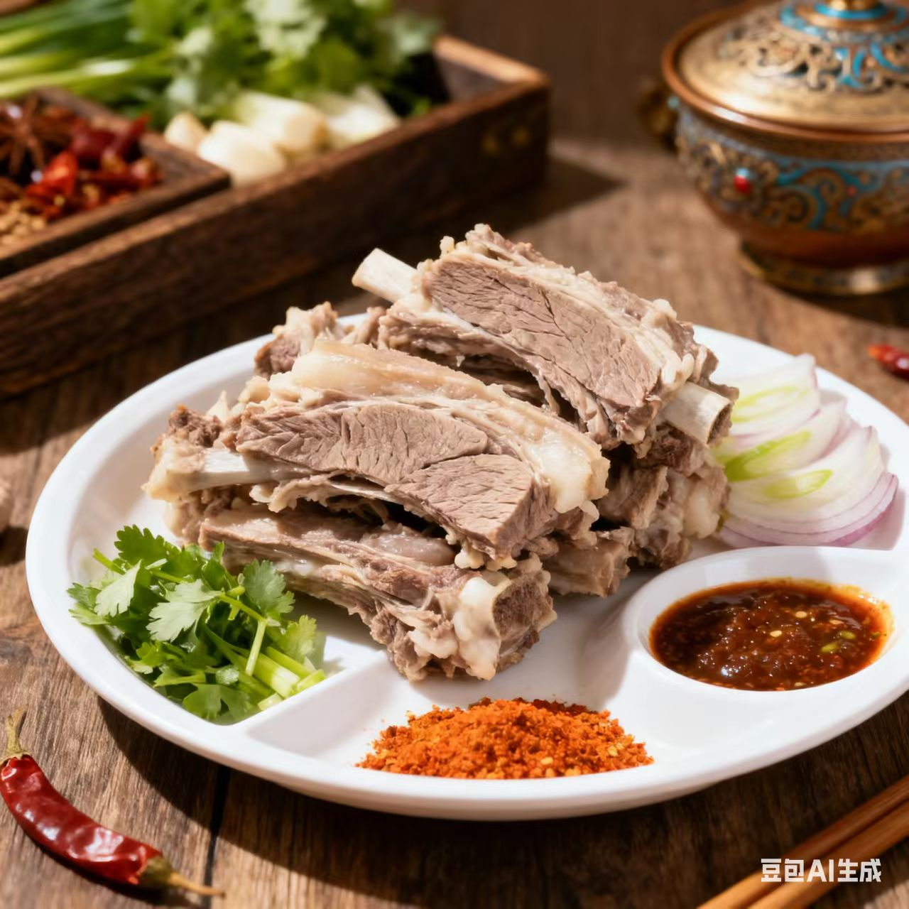
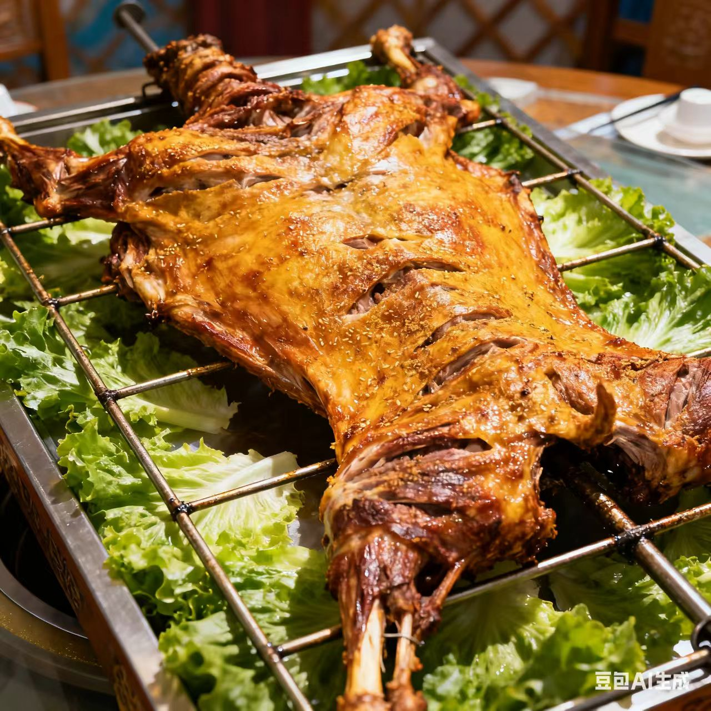
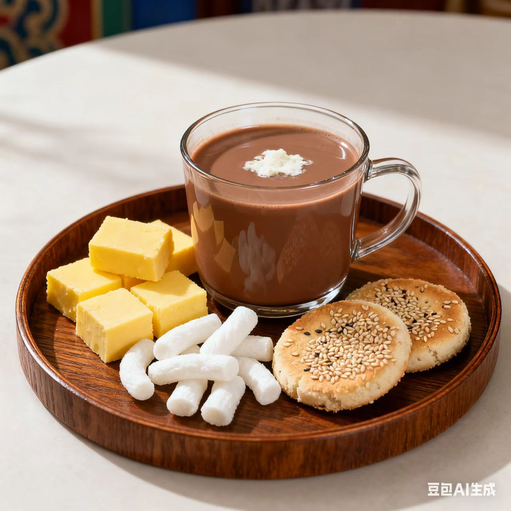

蒙菜 · meng Cuisine
游牧文明的豪迈与本味
一、起源与历史
源于蒙古族游牧饮食，千年传承中保留“以肉奶为主”的风格，近现代融合汉地烹饪，形成“粗犷豪迈、原味至上”的体系，烹饪思想强调“适配游牧、保存营养”
二、地理与气候影响
蒙古高原干旱少雨，饮食以“肉、奶、面”为主；游牧生活促使食材便于携带（如风干肉），烹饪方式简单高效
三、主要烹调技法
- 炒
- 烤
- 烧
- 扒
- 熘
每种技法对应味型，如烤菜的焦香味、煮菜的醇香味、熏菜的咸香味
四、代表菜肴
-
手把肉

-
烤全羊

-
奶茶

五、风味与审美
蒙菜的特点是“醇厚豪放、本味突出”，追求“自然与力量感”（如手把肉的鲜嫩+烤全羊的热烈），体现蒙古人“坦荡质朴”的生活哲学
六、文化意象
蒙菜是“游牧文明的活化石”，从日常奶茶到手把肉宴席，体现了“与草原共生的豪迈气质”
七、地方俗语
手把肉配奶茶，草原生活乐开花
烤全羊上桌，情谊跑不脱
拓展视野：视频
拓展视野：学术资料
| 研究论文 / 报告名称 | 链接 |
|---|---|
| 《鲁菜饮食文化的历史演变》 | 查看论文 |